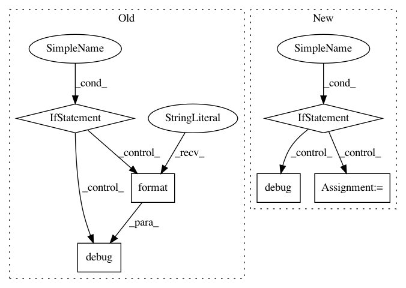

2381a50a70559340a0335288d648b4bb9a675588,slm_lab/agent/algorithm/actor_critic.py,ActorCritic,train_separate,#ActorCritic#,247
Before Change
def train_separate(self):
"""Trains the network when the actor and critic are separate networks"""
if self.to_train == 1:
batch = self.sample()
logger.debug3(f"Batch states: {batch["states"]}")
critic_loss = self.train_critic(batch)
actor_loss = self.train_actor(batch)
total_loss = critic_loss + abs(actor_loss)
logger.debug("Losses: Critic: {:.2f}, Actor: {:.2f}, Total: {:.2f}".format(
critic_loss, abs(actor_loss), total_loss
))
return total_loss.item()
else:
return np.nan
def train_critic(self, batch):
"""Trains the critic when the actor and critic are separate networks"""
if self.body.memory.is_episodic:
return self.train_critic_episodic(batch)
After Change
Trains the network when the actor and critic are separate networks
loss = val_loss + abs(policy_loss)
"""
if self.to_train == 1:
batch = self.sample()
with torch.no_grad():
advs, v_targets = self.calc_advs_v_targets(batch)
policy_loss = self.train_actor(advs)
val_loss = self.train_critic(batch)
loss = val_loss + abs(policy_loss)
// reset
self.to_train = 0
self.body.entropies = []
self.body.log_probs = []
logger.debug(f"Total loss: {loss:.2f}")
self.last_loss = loss.item()
return self.last_loss
def train_actor(self, advs):
"""Trains the actor when the actor and critic are separate networks"""
In pattern: SUPERPATTERN
Frequency: 3
Non-data size: 6
Instances
Project Name: kengz/SLM-Lab
Commit Name: 2381a50a70559340a0335288d648b4bb9a675588
Time: 2018-06-12
Author: kengzwl@gmail.com
File Name: slm_lab/agent/algorithm/actor_critic.py
Class Name: ActorCritic
Method Name: train_separate
Project Name: RasaHQ/rasa
Commit Name: 42f19fa4ffc6e33a802cf5dbd2140a6d282b507a
Time: 2018-11-07
Author: akela@rasa.ai
File Name: rasa_core/policies/keras_policy.py
Class Name: KerasPolicy
Method Name: train
Project Name: ray-project/ray
Commit Name: ef873be9e83fa8ac6b4d71c1a2e589f3db95b5c6
Time: 2021-03-02
Author: ekhliang@gmail.com
File Name: python/ray/resource_spec.py
Class Name: ResourceSpec
Method Name: resolve